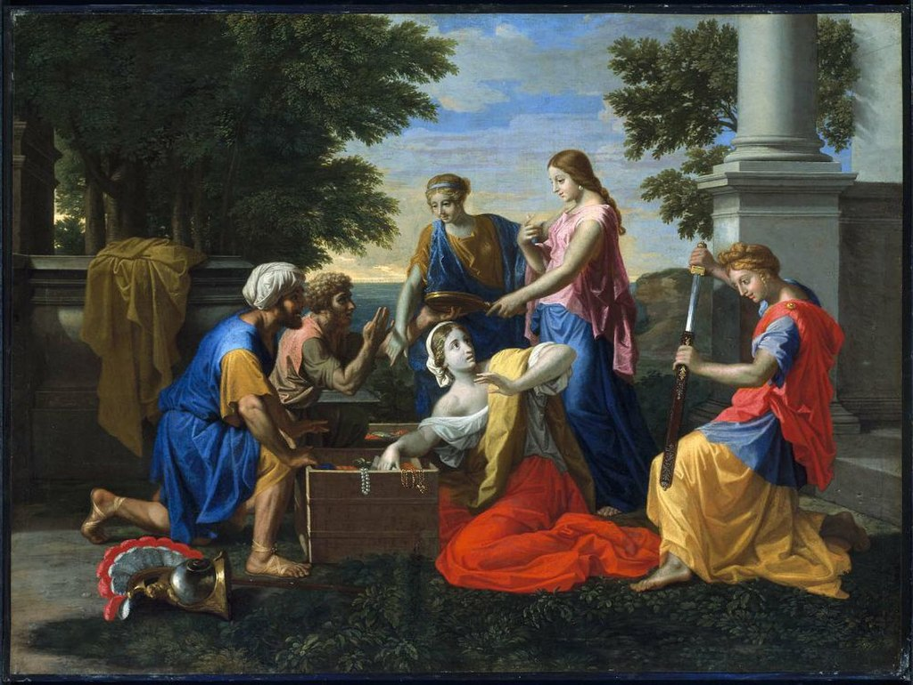

<head>
<meta charset="UTF-8" />
<meta name="keywords" content="drawing, painting" />
<meta name="description" content="drawings by Sunjy" />
<title>Sunjy</title>
<link rel="shortcut icon" type="image/x-icon" href="../../mImages/mCommon/favicon.ico" media="screen" />
<link rel="stylesheet" type="text/css" href="../../mCsses/mCommon/mCssA.css" />
<link rel="stylesheet" type="text/css" href="../../mCsses/mCommon/mCssB.css" />
<link rel="stylesheet" type="text/css" href="../../mCsses/mCommon/mCssC.css" />
<link rel="stylesheet" type="text/css" href="../../mCsses/mCommon/mCssD.css" />
<link rel="stylesheet" type="text/css" href="../../mCsses/mContent/mCssA.css" />
<link rel="stylesheet" type="text/css" href="../../mCsses/mContent/mCssB.css" />
<link rel="stylesheet" type="text/css" href="../../mCsses/mContent/mCssC.css" />
<link rel="stylesheet" type="text/css" href="../../mCsses/mContent/mCssD.css" />
</head>
<script type="text/javascript" src="../../mScripts/mContent/mContentAA.js" /></script>
<script type="text/javascript" src="../../mScripts/mContent/mContentAB.js" /></script>
<script type="text/javascript" src="../../mScripts/mContent/mContentAC.js" /></script>
<script type="text/javascript" src="../../mScripts/mContent/mContentAD.js" /></script>
<script type="text/javascript"></script> 
<script type="text/javascript">
document.write('<div class="mImgAbsolute"></div>');
/*
document.write('<p class="mFontSizeBColor" />From a white paper...</p>');
document.write('<table class="center"><tr><td>');
document.write('');
document.write('</td></tr></table>');
*/
</script>


<script type="text/javascript">
document.write('<p class="mFontSizeBColor" />Discovery of Achilles on Skyros</p>');
document.write('<p class="mFontSizeSColor" />“Discovery of Achilles on Skyros” by Nicolas Poussin depicts the Greek chieftains Ulysses and Diomedes disguised themselves as merchants. Achilles gave himself away by snatching up a sword that they had concealed in their chests of jewelry and clothing.<br><br>The popularity of the “Achilles on Skyros” story was due to the aspect of disguises and cross-dressing. Achilles dressed as a girl, and women often performed his role. Many of the earlier operas approached the theme from a carnivalesque point of view, emphasizing the comedy, the masquerade, and the homoerotic aspects. Other Operas focused on the failed struggle to conceal the masculinity of the archetypical hero Achilles, and how the inherent nature of the person is stronger than the nurture he pretends.<br><br>Some of the well-known composers writing an opera on this theme include Domenico Scarlatti, John Gay, and Georg Friedrich Händel.<br></p>');
document.write('<table class="center" /><tr><td>');
document.write('<br>The popularity of the “Achilles on Skyros” story was due to the aspect of disguises and cross-dressing. Achilles dressed as a girl, and women often performed his role. Many of the earlier operas approached the theme from a carnivalesque point of view, emphasizing the comedy, the masquerade, and the homoerotic aspects. Other Operas focused on the failed struggle to conceal the masculinity of the archetypical hero Achilles, and how the inherent nature of the person is stronger than the nurture he pretends.<br><br>Some of the well-known composers writing an opera on this theme include Domenico Scarlatti, John Gay, and Georg Friedrich Händel.<br>" />');
document.write('</td></tr></table>');
</script>


